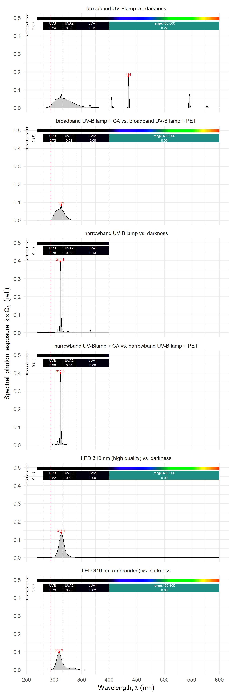
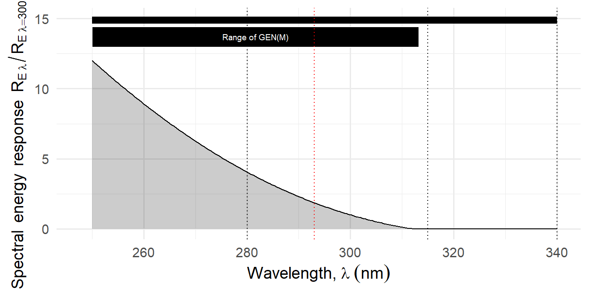
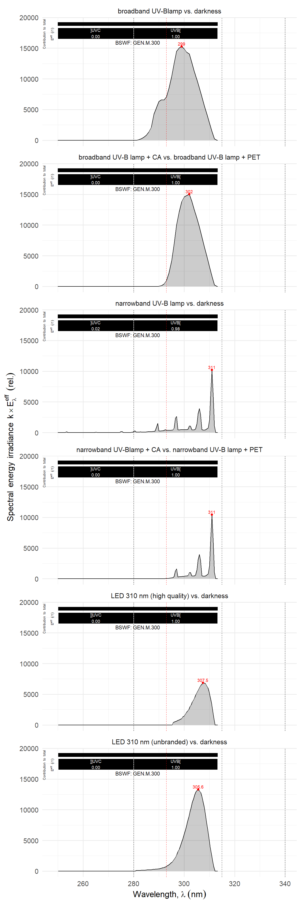
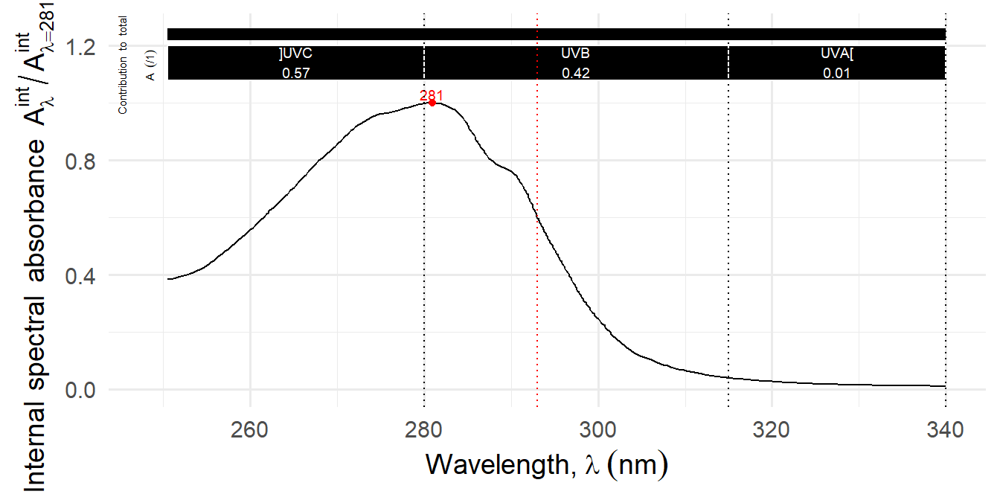
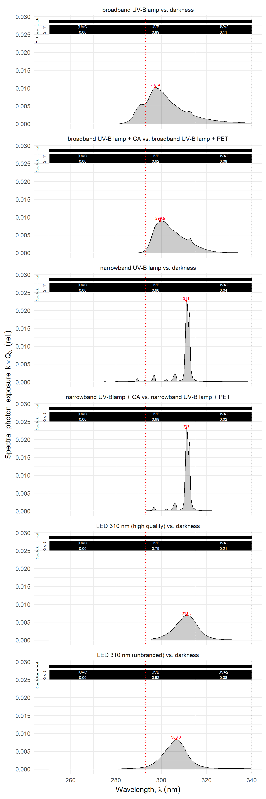

9 Ensuring reproducibility
Data sharing, code sharing and methods reporting
Note
This chapter is based on the column Reproducibility of UV-research with plants (Aphalo2020?). doi:10.19232/uv4pb.2020.1.00
9.1 Introduction
Lack of reproducibility in scientific research is a broad problem that has woken up the interest of politicians and the general public (Fineberg2019). For example the US Congress requested the US National Academy of Sciences to produce a report about this problem (Fineberg2019). This chapter deals with problems that keep reappearing both in submitted manuscripts and published articles related reproducibility of photobiological research with plants.
We can divide problems of reproducibility into two broad categories: 1) contradictory conclusions in experiments intended to test the same hypothesis using different experimental set ups or methods, and 2) inconsistent results between an earlier experiment and a new instance of the same experiment following exactly the methods description of the earlier experiment.
In the first case, the design of the treatments or the interpretation of the results can be flawed, usually because of unfulfilled implicit or explicit assumptions or an invalid data analysis. In the second case, the likely problem is a mismatch between the description of methods and what has been actually done. It is not uncommon that both categories of problems coexist, because of the lack of description of an unrecognised false assumption.
In our field of research, the main sources of difficulties seem to be the mismatch between methods and research aims, the incomplete description of methods and the misinterpretation of experimental results by ignoring the limitations of the protocols and methods used. Even though rather few papers published in our field are flawed in ways that would require retraction, a very large proportion of papers are unnecessarily weakened in their usefulness and trustworthiness to some degree by these problems.
The problem is not a phenomenon restricted to low impact journals but it affects also very highly ranked journals. Given that papers with avoidable flaws are being accepted for publication, the problem concerns authors, reviewers and editors. The problem of reproducibility affects many fields of research and improvements are possible, and in many cases, even easy to implement. It also means, that as readers, we need abide by the good practice of critical reading and not accepting at face value conclusions from published papers. Examples follow, starting with one related to the first category: the artificial radiation treatments that are frequently interpreted as roughly equivalent tests of responses to UV-B radiation by plants.
Frequent problems
Use of controls and/or treatments unsuitable to the aims of a study and the consequent misinterpretation of the results is “bad science”, that contributes to inefficient use of resources and contaminates the corpus of shared scientific knowledge.
Statistical analysis based on unrealistic assumptions leads to wrong conclusions. If the original data are not shared it can be impossible to validate the conclusions using an alternative approach to the analysis, or to effectively combine the data with that from other studies in a metaanalysis.
Incompletely described methods hinder a knowledgeable reassessment of conclusions by readers and prevent the verification of the results of an experiment by replicating it. They also hinder the reuse of the results in meatanalysis. Most importantly, when results between experiments are contradictory, incomplete knowledge of the differences in methods, hinder the design and execution further research that could find the root of the contradictory results, whether a flaw or not. In many cases, a full description, implies full disclosure of the raw data,
9.2 Controls and treatments in UV research
In any comparative study, controls and treatments are equally important. Control and treatment conditions must be chosen with equal care and described in the same detail. The “treatment” is the sum of all differences present between treatment and control, both intended and not intended.
Obviously the reliability of what we infer from this comparison is limited by the sum of the weaknesses of the two. The question of suitable controls in UV research has been already discussed in depth, most frequently in relation to UV-supplementation studies carried out outdoors (Newsham et al.1996). The same argumentation concerns laboratory and controlled environments experiments.
In all cases, the question is to identify all relevant differences between treatments and controls, and design both controls and treatments in a way that makes the observed effects interpretable as a test of the scientific hypothesis under evaluation.
All light sources have side effects like emission of radiation at wavelengths shorter and longer than UV-B including thermal radiation. Lamps can also shade radiation from other sources and potentially create electromagnetic fields.
There are huge differences among UV-B radiation treatments in frequent use both when expressed as a flux of photons Figure 9.1 or using different weighting functions Figure 9.3. A key difference is in the amount of radiation outside the UV-B waveband and in which wavelength within the UV-B band predominate.
When using a photon flux to describe the treatment, one should keep in mind that the waveband definitions in the UV region are rather arbitrary when used with plants, and that the effectiveness of photons varies in most cases, continuously with wavelength both within and between the standardised definitions of UV-B and UV-A radiation. Thus, the same UV-B photon irradiance from two different UV-B sources is unlikely to trigger responses that are quantitatively equal, and in many cases, not even qualitatively consistent.
We can attempt to match the effects of different UV sources using biological spectral weighting functions (BSWFs). The problem is that different responses follow different spectra for effectiveness, and these responses may be triggered concurrently. Thus, the use of BSWFs gives only an approximation to the real effectiveness in relation to a specific response. One frequently used BSWF is the generalised plant damage spectrum (CaldwellXXXX?) shown in Figure 9.2.

Using the the generalised plant damage spectrum a BSWF we obtain an spectrum of the expected effect of different wavelengths as present in the output of a light source. The areas under curves in Figure 9.3 describe the expected effect from the same UV-B photon irradiance from the different UV sources from Figure 9.1.

The action spectrum of UV responses mediated by UVR8 can be expected to have the same shape as the absorption spectrum of the UVR8 protein. We can use this spectrum, shown in Figure 9.4 as a BSWF to obtain the curves in Figure 9.5.


It is naïve to expect plants to respond similarly to all of the different combinations of UV sources and controls. Quantitative reproducibility can be expected only when comparing identical or very similar irradiation setups. Thus, it is hugely important that the actual treatment and control used are described in enough detail.
Which treatments are “wrong”?
A treatment is “wrong” only if it does not address the aim of the study. Goodness or badness stems from a match or mismatch between aims, treatment and interpretation of the results.
A comparison between unfiltered broad-band UV-B lamps and darkness, does not inform about the effect of UV-B radiation, because only 34% of the emitted short-wave radiation is in the UV-B. However, it does inform about the effect of the lamps on their own, which in some applications may be of interest.
Outdoors at ground level, only wavelengths longer than 293 nm are present. Thus any treatment that includes shorter wavelengths is of doubtful relevance to plants growing outdoors: this includes both unfiltered narrow-band-, broad-band UV-B lamps and many UV-B LEDs. If all radiation is between 280 nm and 315 nm, such treatments are valid tests for the effect of UV-B radiation, but not a good test of the effect of solar UV-B radiation.
In nature UVR8 is activated by both UV-B and UV-A2, thus in some cases UV-B sources that also emit UV-A2 may be the best match to the aims of an study, while being a bad choice to test for the effect of UV-B radiation.
9.3 Incomplete methods description
A surprisingly large number of papers reporting on experiments carried out in the laboratory fail to mention if the UV-treatments were applied under a background of white light or in darkness. We are also only rarely told under which conditions the controls were kept while the treatments were applied (e.g., same irradiance of visible light, same temperature, etc.).
The spectrum and irradiance of the background UV, visible and NIR radiation is almost never reported. The lack of this information makes experiments not reproducible by independent researchers and can easily make results from different studies seem contradictory. This tends to be the result of authors relying on implicit, and frequently unwarranted, assumptions for the interpretation of results, such as “weak background illumination can be ignored”. Does this matter? Yes, because the ratio between different wavelengths affects responses (Krizek2004; Yan et al.2020) through signalling interactions downstream of UVR8 and other photoreceptors (Lau et al.2019; Morales et al.2015; Moriconi et al.2018; Rai et al.2019,2020; Tissot and Ulm2020) and because UVR8 can also participate in the perception of UV-A2 radiation (Rai etal. 2020).
Consequently, the interpretation and the range of applicability of the results of an experiment about UV-B or any other narrow region of the spectrum, depends on information about the whole spectrum to which plants are exposed. Results from earlier studiesthat describe methods in enough detail can be re-interpretedin the light of later advances, but those reported with incomplete methods,cannot.
9.4 Unrealistic assumptions
9.4.1 Light sources
Unrealsitic assumptions are not only about plants, they can also affect the instruments and equipment such as light sources.
Specifying a lamp type in many cases does not provide enough information. In the long run manufacturers tend to revise the specifications of the lamps they sell without changing the type name or code. There is variation from batch to batch, and for LEDs even between individual LEDs of the same type, so much that many classify them into “bins” or subtypes based on the measured peak wavelength and emission efficiency. Specially the “fantasy names” like “UV-B lamps or UV LEDs” used by some lamp sellers are far from informative. UV-B, UV-A, and black light broadband lamps all emit visible light and UV-radiation at other wavelengths than those expected from their names. In many cases even codes derived from such names are inconsistently used.
The peaks of emission can be at different wavelengths for equivalent lamps from different suppliers (e.g., “black light blue” or BLB lamps have maximum emission at either 385 nm or 368 nm depending on supplier or vintage). In addition the output of both fluorescent lamps and LEDs depends on ambient temperature and on their age. In the case of UV-B fluorescent lamps the effect of temperature on the irradiance is very large, something that many researchers seem not to be aware of. In the case of white flourescent tubes, not only the irradiance but also the emission spectrum can be affected by temperature.
Be aware that reflections from walls, tables, glass and metal objects, and even clothes can distort the spectrum impinging on plants. Not only reflection is important in the case of UV radiation, many objects fluoresce strongly in the blue or other regions when illuminated with UV radiation, e.g., whitepaper and clothes, and laundry powders contain fluorescent additives that are added so that paper and clothes look whiter (Björn et al.2012).
Whenever possible we should provide a measured spectrum for the UV and visible radiation source(s) actually used, measured under the same ambient conditions and at the same physical location as in the reported experiment. Measurements should be done close in time to when the sources were used if not at the same time. Do not trust previous measurements or manufacturer specifications to be representative of your use case.
9.4.2 Petri dishes, microscope cover slides and other barriers
Rarely the existence or not of a barrier and whether the irradiance or spectra have been measured behind the barrier or in front of it is reported. Even less frequently the exact type and supplier are reported. If light or UV treatments are applied through the lids of Petri dishes, a cover-slip or microscope slide, a water layer or there is anything else than air in the path of the radiation, the spectrum and irradiance could be significantly affected. As we do not see in the UV or NIR, what looks transparent, may not be so in UV or NIR.
The shape of the barrier or vessel can also make it function as a lens. So irradiation of liquid samples is best done in vessels with a square cross section, i.e., the same reason why spectrophotometry cuvettes are almost never round like normal test tubes. We need always to measure (or at least estimate) the spectrum and irradiance and define treatments as received by the target organism behind any barrier that separates it from the radiaiton source. We also have to remember to take into account that the angle of incidence matters both for glass or plastic barrier and the organism.
9.5 Mistakes and surprises
Over reaction to surprising results. Over-interpretation and too-early dumping of surprising results are embarrassing and wasteful, respectively. Over- and misinterpretation of results are common, specially in those journals that too easily accept newsworthy and controversial reports. In the case of surprising results that are discarded too early we can only guess that this can also easily happen.
Reported values that are incompatible with the description of what and how was measured are worryingly common in publications. It is almost always possible for researchers to assess the “sanity” of the measured values obtained. For example molar extinction coefficient values for proteins can roughly and easily be estimated on the basis of the amino acid sequence. This is only an approximation, but if our measured values are nearly two orders of magnitude larger, we should carefully investigate what is going on.
If our estimate of water vapour pressure is higher than that expected at 100% relative humidity we should check our instruments and their calibration. If the UV-B irradiance from our lamps is many times lower than what others have reported for the same lamps, filters and distance, we should check calculations and measuring instruments. These examples are real, and for the last one I know of two cases, due to different problems. Of these four examples two made all the way to publication and two were caught in time. In the first two cases, I have no idea of the cause behind the bad data. In one of last two cases, calculation errors were the cause, and in the other case a completely wrong calibration of a new spectrometer, supplied by the manufacturer caused the problem.
This may sound disappointing, but in my experience, most unusual and surprising results from routine measurements using usual methods and applying similar treatments as others have earlier used are caused by methodological problems and mistakes. On the other hand, surprising results can be real, and tell an unexpected story, even if caused by mistakes, when the nature of the mistake is known.
Deeper problems are caused by jumping to conclusions too easily. The solution is to be distrustful of any results, specially those that seem too good or too bad to be true. Cool down your enthusiasm or despair, imagine yourself for a while as an external reviewer, picky and suspicious of everything. But, of course, do remember to switch back to your positive and enthusiastic self once you have checked your data and before you deal with the problems you may have found!
9.6 Data sharing
9.7 Computer-code sharing
9.8 Pre-registration
9.9 Correction of errors
The self-correction mechanisms of science are made sluggish by the persistence of misconceptions and the continued use of methods known to be bad (due to tradition?), e.g., the recent growth in popularity of Arnon’s equation for quantification of chlorophyll concentration by spectrophotometry, even though it has been known for well over three decades that it yields wrong estimates of the concentration (Porra and Scheer2018). Scientific knowledge advances by the revision and correction of previous theories and hypotheses (see Godfrey-Smith2003, for an introduction to the phylosophy of science). This concerns science as a whole, but also each one of us. We develop as researchers and advance in our career by the same process. There is no shame or problem in changing our opinion and we should be open about these changes. If you are a young researcher, do not be afraid of changing your mind during the course of your career. This is how one grows as a researcher. In the same way that we may want to criticise earlier publications or suggest changes or replacements for views from other authors we should be ready to criticise and revise the ideas we have proposed in our earlier publications.
A research report usually contributes data and ideas. These are linked, and this link builds upon earlier ideas and data. Depending on the case, the data or the ideas will be relevant for a longer time, while the link between them will frequently become outdated first. Data for which methods are incomplete have little value in themselves, as they cannot be reinterpreted in the light of new ideas. Conclusions and knowledge that are built upon evidence whose strength or reliability cannot be independently assessed contribute little to scientific progress. If they guide subsequent research unnecessarily into conceptual dead-ends they disturb the normal progress of scientific research causing expensive distraction of resources. So, we should strive as a community to retroactively correct if possible or alternatively highlight the flaws and inaccuracies in our own and in other authors’ publications, both old and recent. This is simply how science issupposed to self-correct errors and we should not be afraid of doing so.
Both in terms of career progress and contribution to society we have to avoid thinking only in the short term or with a narrow view. More broadly, the evaluation and rewards systems used for scientific research need to be reformulated so that the premium for doing reproducible and useful scientific research vs. flashy and unwarranted controversial or hastily done but overinterpreted studies is very clearly in favour of the first.
The bottom line
Research is expensive, but justified based on the benefits it can provide to our society. Bad science derails decision making and biases resource allocation. Even if “bad science”, intentional and accidental, has a much more direct and dramatic impact in medicine and health care (Goldacre2010) than in our research field, the same principles apply and are applicable to efforts to improve plant production and food security (Sadras et al.2020). There is constant tension in the allocation of funding to research, as most research ultimately competes for taxpayers’ money that could be used to improve voters’ well-being in other more direct ways. We ensure that our work provides the maximum benefit to society if the fruits of our work can be trusted and the quality and relevance of the data we generate can be properly and independently assessed. Transfer of knowledge to stakeholders is a crucial step, but first we need to generate knowledge that stakeholders can trust and use with benefit.